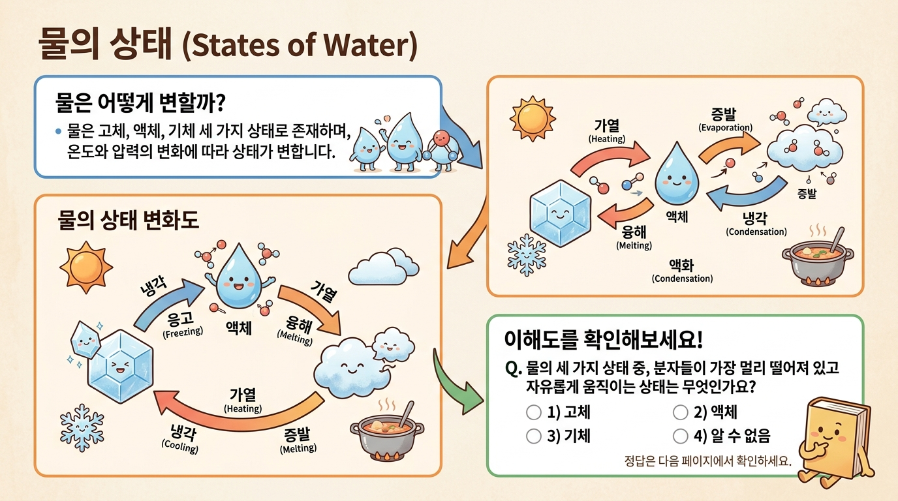

Step 6 · 인터랙티브 — 다이어그램·이미지·퀴즈로 교재에 생명 불어넣기¶
이 챕터에서 배울 것¶
- 에듀플로가 제공하는 4가지 인터랙티브 요소(Mermaid 다이어그램, AI 이미지, 퀴즈, 코드 실행 블록)의 종류와 교육적 역할을 설명할 수 있습니다.
- 시각화 → 텍스트 → 활동이 학습 흐름 안에서 유기적으로 이어지는 배치 원칙을 이해합니다.
- 자신의 교재 챕터에 Mermaid 다이어그램 1개와 퀴즈 2문항 이상을 직접 삽입합니다.
- "보이면 이해된다"는 에듀플로 헌법 제7조의 의미를 체감합니다.
도입 — 글자만 가득한 교재, 학생의 눈에는 어떻게 보일까?¶
한 가지 장면을 상상해 봅시다.
선생님이 정성스럽게 쓴 교재가 있습니다. 개념 설명도 정확하고, 예시도 풍부합니다. 그런데 학생이 페이지를 펼치는 순간, 눈앞에 펼쳐지는 건 빽빽한 글자의 바다입니다. 첫 문단을 읽기도 전에 한숨이 나옵니다.
반대의 장면도 떠올려 봅시다. 같은 내용인데, 중간중간에 흐름도가 있고, 핵심 장면을 보여주는 이미지가 있고, "여기까지 이해했는지 확인해 볼까요?" 하는 짧은 퀴즈가 있습니다. 학생의 눈이 페이지 위를 자연스럽게 따라갑니다. 읽다가 멈추고, 그림을 보고, 퀴즈를 풀고, 다시 읽습니다.
같은 내용인데 학습 경험은 완전히 다릅니다.
이것이 바로 Step 6, "인터랙티브" 단계의 핵심입니다. Step 4에서 본문 텍스트를 완성하고, Step 5에서 교육적 품질을 점검했습니다. 이제 그 글에 생명을 불어넣을 차례입니다.
본문¶
1. 왜 인터랙티브 요소가 필요한가? — 세 가지 교육적 이유¶
인터랙티브 요소를 넣는 이유는 단순히 "예뻐 보이려고"가 아닙니다. 교육학적으로 분명한 근거가 있습니다.
첫째, 이중 부호화 효과입니다. 사람은 텍스트(언어 채널)와 이미지(시각 채널)를 동시에 접하면 기억 보유율이 높아집니다. 글로만 설명한 프로세스를 다이어그램으로 한 번 더 보여주면, 학생의 뇌에 두 개의 경로로 정보가 저장됩니다.
둘째, 능동적 처리를 유도합니다. 퀴즈나 코드 실행 블록은 학생이 "읽기만 하는 상태"에서 "직접 해보는 상태"로 전환시킵니다. 수동적 독자가 능동적 학습자로 바뀌는 순간입니다.
셋째, 인지 부하를 분산합니다. 복잡한 개념을 글로만 설명하면 한꺼번에 많은 정보가 몰립니다. 중간에 다이어그램이나 퀴즈를 배치하면, 학생이 숨을 고르고 지금까지의 내용을 정리할 수 있습니다.
위 다이어그램이 바로 좋은 교재의 학습 흐름입니다. 텍스트 → 시각화 → 활동 → 점검 → 다음 개념. 이 순환이 챕터 안에서 반복됩니다.
2. 에듀플로의 4가지 인터랙티브 요소¶
에듀플로 Step 6에서 사용할 수 있는 인터랙티브 요소는 네 가지입니다. 하나씩 살펴봅시다.
요소 ① Mermaid 다이어그램 — 관계와 흐름을 한눈에¶
비유부터 시작합니다. 지하철 노선도를 떠올려 보세요. 복잡한 도시의 교통망을 선 몇 개와 점 몇 개로 단순하게 보여줍니다. Mermaid 다이어그램도 같은 역할입니다. 복잡한 개념의 관계나 프로세스를 선과 상자로 단순화해서 보여줍니다.
정확한 정의를 말씀드리면, Mermaid는 텍스트 기반의 다이어그램 생성 도구입니다. 코드를 작성하면 자동으로 다이어그램이 그려집니다. 그림판에서 도형을 하나씩 배치할 필요가 없습니다.
어떤 상황에서 쓰면 좋을까요?
| 다이어그램 유형 | 적합한 상황 | 교과 예시 |
|---|---|---|
flowchart |
프로세스, 순서, 의사결정 | 알고리즘 흐름, 실험 절차 |
sequenceDiagram |
주고받는 상호작용 | 클라이언트-서버 통신, 대화 구조 |
pie |
비율과 구성 | 에너지원 비율, 예산 분배 |
stateDiagram |
상태 변화 | 물의 상태 변화, 프로그램 상태 |
💡 기억하세요:
mindmap유형은 렌더링 호환성 문제가 있어 에듀플로에서는 사용하지 않습니다. 대신flowchart로 비슷한 효과를 낼 수 있습니다.
한 가지 중요한 원칙이 있습니다. 하나의 다이어그램에 노드는 10개 이하로 유지하세요. 그 이상이면 오히려 학생의 인지 부하가 증가합니다. 복잡한 내용은 여러 개의 작은 다이어그램으로 나누는 것이 낫습니다.
요소 ② AI 이미지 — 글로 표현하기 어려운 것을 보여주기¶
교재에 이미지가 필요한 순간이 있습니다. 실험 장비의 모습, 역사적 장면의 재현, 추상적 개념의 시각적 표현 등. 에듀플로에서는 두 가지 방법으로 이미지를 넣을 수 있습니다.
- AI가 생성한 이미지: 텍스트로 원하는 이미지를 설명하면 AI가 그려줍니다.
- 교사가 직접 업로드: 본인이 가진 사진이나 그림을 올립니다.
이미지 사용의 핵심 원칙은 "보충"입니다. 이미지는 텍스트 설명을 보충하는 역할입니다. 이미지만으로 내용을 전달하려 하면 안 됩니다. 반대로, 텍스트만으로 충분한 곳에 이미지를 억지로 넣으면 오히려 방해가 됩니다.
챕터당 이미지는 2~3개가 적당합니다. 너무 많으면 오히려 인지 부하가 증가합니다. "이 이미지가 없으면 학생이 이해하기 어려운가?"라고 자문해 보세요. 답이 "예"일 때만 넣으면 됩니다.
요소 ③ 퀴즈 체크포인트 — 이해를 확인하는 쉼표¶
긴 문장을 읽을 때 쉼표가 필요하듯, 긴 학습 과정에도 쉼표가 필요합니다. 퀴즈가 바로 그 역할을 합니다.
에듀플로의 퀴즈는 시험이 아닙니다. "자기 점검(self-check)"입니다. 학생이 스스로 "아, 나는 여기까지 이해했구나" 또는 "어, 이건 다시 읽어봐야겠다"고 판단하는 도구입니다.
퀴즈 배치의 원칙:
- 핵심 개념 2~3개를 설명한 직후에 배치합니다.
- 챕터 끝에 종합 확인 문제를 추가합니다.
- 정답뿐 아니라 오답 설명도 함께 제공합니다. "왜 틀렸는지"를 아는 것이 학습입니다.
나쁜 배치와 좋은 배치를 비교해 봅시다.
왼쪽처럼 퀴즈를 마지막에 몰아두면, 학생은 개념 A를 이미 잊어버린 상태에서 문제를 풀게 됩니다. 오른쪽처럼 중간중간 배치하면, 방금 읽은 내용을 바로 확인할 수 있습니다.
요소 ④ 코드 실행 블록 — 직접 돌려보는 체험¶
프로그래밍 교재라면 코드 실행 블록이 특히 강력합니다. 에듀플로는 Pyodide(브라우저에서 실행되는 Python)와 p5.js(시각적 시뮬레이션)를 지원합니다.
코드 실행 블록의 교육적 가치는 "수정해 보기"에 있습니다. 학생이 예시 코드를 읽는 것만으로는 50%만 이해합니다. 직접 숫자를 바꿔보고, 한 줄을 삭제해 보고, 오류 메시지를 만나봐야 진짜 이해가 됩니다.
프로그래밍 교재가 아니더라도 활용할 수 있습니다. 예를 들어, 수학 교재에서 함수의 그래프를 Python으로 그려보거나, 과학 교재에서 시뮬레이션을 실행해 볼 수 있습니다.
💡 모든 교재에 코드 블록이 필요한 것은 아닙니다. 국어, 역사, 사회 교재라면 다이어그램·이미지·퀴즈만으로 충분합니다. 자신의 교과에 맞는 요소를 선택하세요.
3. 배치 원칙 — 시각화·텍스트·활동의 유기적 연결¶
네 가지 요소를 알았으니, 이제 가장 중요한 질문입니다. 어디에 넣어야 할까요?
인터랙티브 요소를 넣는 위치는 "교육적 흐름" 안에서 결정해야 합니다. 두 가지 핵심 원칙을 기억하세요.
원칙 ① 설명 직후에 시각화하라¶
개념을 글로 설명한 바로 다음에 다이어그램이나 이미지를 배치합니다. 학생이 "방금 읽은 내용이 이런 모습이구나"라고 바로 확인할 수 있어야 합니다.
✅ 좋은 흐름:
"변수에 값을 저장하면 메모리에 공간이 할당됩니다."
→ [메모리 구조를 보여주는 다이어그램]
❌ 나쁜 흐름:
"변수에 값을 저장하면 메모리에 공간이 할당됩니다."
→ [3페이지 뒤에 다이어그램]
→ 학생: "이 그림이 뭐에 대한 거였지?"
원칙 ② 개념과 활동을 분리하지 마라¶
설명 A, B, C를 연속으로 한 다음 활동 A, B, C를 연속으로 하면 안 됩니다. 설명 A → 활동 A → 설명 B → 활동 B가 훨씬 효과적입니다.
이 원칙을 하나의 흐름으로 정리하면 다음과 같습니다.
이 흐름이 챕터 안에서 2~3번 반복되는 것이 이상적입니다.
4. 실전 예시 — "물의 상태 변화" 교재에 인터랙티브 요소 넣기¶
이론만으로는 감이 잘 안 올 수 있습니다. 구체적인 예시를 하나 살펴봅시다.
중학교 과학 "물의 상태 변화" 챕터를 만든다고 가정합니다. Step 4에서 본문 텍스트를 완성한 상태입니다. 이제 Step 6에서 인터랙티브 요소를 추가합니다.
[텍스트 설명]
물은 온도에 따라 고체(얼음), 액체(물), 기체(수증기) 세 가지 상태로 존재합니다. 온도가 올라가면 고체 → 액체 → 기체로 변하고, 온도가 내려가면 반대 방향으로 변합니다.
[바로 아래에 다이어그램 배치]
[퀴즈로 확인]
🧩 자기 점검: 얼음이 직접 수증기로 변하는 현상을 무엇이라고 할까요? - (A) 융해 - (B) 기화 - (C) 승화 - (D) 액화
정답: (C) 승화 — 고체가 액체를 거치지 않고 바로 기체로 변하는 현상입니다. 겨울철 빨래가 얼었다가 마르는 것이 대표적인 예입니다.
이렇게 텍스트 → 다이어그램 → 퀴즈가 하나의 묶음으로 이어집니다. 학생은 글을 읽고, 그림으로 확인하고, 문제로 점검하는 흐름을 자연스럽게 따라갑니다.

5. 에듀플로에서 인터랙티브 요소 추가하기 — 실제 사용법¶
에듀플로의 Step 6 화면에서는 다음과 같은 과정으로 인터랙티브 요소를 추가합니다.
Mermaid 다이어그램 추가하기:
- 챕터 편집 화면에서 다이어그램을 넣고 싶은 위치를 클릭합니다.
- "다이어그램 삽입" 버튼을 누릅니다.
- AI에게 자연어로 요청합니다: "물의 상태 변화를 상태 다이어그램으로 그려줘"
- AI가 Mermaid 코드를 생성하고, 미리보기가 바로 표시됩니다.
- 마음에 들지 않으면 "노드를 좀 더 단순하게 해줘"라고 피드백합니다.
퀴즈 추가하기:
- 퀴즈를 넣고 싶은 위치에서 "퀴즈 삽입" 버튼을 누릅니다.
- AI에게 요청합니다: "방금 설명한 상태 변화에 대해 객관식 2문항 만들어줘"
- AI가 문항, 보기, 정답, 해설을 생성합니다.
- 교사가 검토하고 수정합니다. (문항의 난이도나 선택지를 조정)
여기서 중요한 점이 있습니다. AI가 만든 퀴즈를 그대로 쓰지 마세요. 반드시 선생님이 검토해야 합니다. 학생들이 실제로 헷갈리는 부분, 수업에서 강조한 포인트는 선생님만 알고 있습니다. 에듀플로 헌법 제1조 — "모든 결정은 교사가" — 를 여기서도 기억해 주세요.
실습 — 내 교재 챕터에 생명 불어넣기¶
이제 직접 해볼 시간입니다. 이전 단계(Step 4~5)에서 작성하고 검토한 교재 챕터를 열어주세요. 아직 챕터가 완성되지 않았다면, 가장 핵심 개념이 담긴 한 섹션만 선택해도 됩니다.
실습 과제 A: Mermaid 다이어그램 1개 삽입하기¶
단계 1 — 챕터를 훑어보며, "이 부분은 그림으로 보여주면 훨씬 이해가 쉬울 텐데"라고 생각되는 곳을 찾으세요.
단계 2 — 다음 중 어떤 유형이 적합한지 판단하세요.
| 이런 내용이라면 | 이 유형을 선택하세요 |
|---|---|
| A 다음에 B, B 다음에 C (순서) | flowchart TD |
| A와 B가 주고받는 관계 | sequenceDiagram |
| 전체에서 각 부분이 차지하는 비율 | pie |
| 상태가 바뀌는 과정 | stateDiagram-v2 |
단계 3 — 에듀플로에서 AI에게 요청하세요. 예시:
"이 챕터에서 설명한 광합성 과정을 flowchart로 만들어줘. 노드는 7개 이하로, 라벨은 한국어로 해줘."
단계 4 — 생성된 다이어그램을 확인하고, 필요하면 수정을 요청하세요.
⚠️ 주의: 다이어그램의 노드가 10개를 넘지 않는지 확인하세요. 넘는다면 "핵심만 남기고 단순화해줘"라고 피드백하세요.
실습 과제 B: 퀴즈 2문항 이상 삽입하기¶
단계 1 — 챕터에서 가장 중요한 개념 2~3개를 골라주세요. "학생이 이것만은 반드시 기억해야 한다"는 내용입니다.
단계 2 — 각 핵심 개념에 대해 퀴즈 1문항씩 만들어달라고 AI에게 요청하세요. 예시:
"변수와 상수의 차이를 확인하는 객관식 문제 1개, 반복문의 동작 원리를 확인하는 빈칸 채우기 1개 만들어줘. 각 문제에 정답 해설도 포함해줘."
단계 3 — AI가 만든 퀴즈를 반드시 검토하세요. 다음 체크리스트를 활용합니다.
- 정답이 실제로 맞는가?
- 오답 선택지가 그럴듯한가? (너무 뻔한 오답은 교육 효과가 없습니다)
- 해설이 "왜 맞는지"와 "왜 틀린지" 모두 설명하는가?
- 방금 설명한 내용의 바로 뒤에 배치했는가?
단계 4 — 퀴즈를 적절한 위치에 배치하세요. 챕터 끝이 아니라, 해당 개념을 설명한 직후에 넣는 것을 잊지 마세요.
실습 결과 확인¶
실습이 끝나면, 완성된 챕터를 처음부터 끝까지 학생의 입장에서 읽어보세요. 다음 질문에 "예"라고 답할 수 있으면 성공입니다.
- 다이어그램이 텍스트 설명을 보충하고 있는가? (텍스트와 동떨어져 있지 않은가?)
- 퀴즈가 핵심 개념의 바로 뒤에 위치하는가?
- 학생이 "읽고 → 보고 → 풀고"의 흐름을 자연스럽게 따라갈 수 있는가?
정리¶
이번 챕터에서 배운 내용을 세 줄로 정리합니다.
- 인터랙티브 요소는 4가지 — Mermaid 다이어그램(관계·흐름), AI 이미지(시각적 보충), 퀴즈(자기 점검), 코드 실행 블록(체험 학습). 자신의 교과에 맞는 요소를 선택하면 됩니다.
- 배치 원칙은 "설명 직후" — 개념 설명 바로 다음에 시각화, 바로 다음에 퀴즈. 개념과 활동을 분리하지 않습니다.
- AI가 만들고, 교사가 다듬는다 — AI가 다이어그램과 퀴즈를 빠르게 생성하지만, 최종 판단은 항상 선생님의 몫입니다.
🔑 에듀플로 헌법 제7조 — "보이면 이해된다" 점진적 시각화의 마지막 퍼즐이 바로 이 Step 6입니다. Step 1부터 조금씩 선명해져 온 교재가, 이 단계를 거치면 학생의 눈앞에서 살아 움직이기 시작합니다.
성찰 질문¶
실습을 마친 후, 잠시 멈추고 아래 질문을 스스로에게 물어보세요.
- 내가 넣은 다이어그램은 텍스트만으로는 전달하기 어려운 내용을 담고 있는가? 아니면 텍스트를 단순히 반복하고 있는가?
- 내가 만든 퀴즈를 실제 학생이 풀었을 때, "아, 이건 다시 읽어봐야겠다"고 느낄 수 있는 난이도인가?
- 교재 전체를 학생의 눈으로 읽었을 때, 글 → 그림 → 활동의 리듬이 자연스러운가?
다음 챕터 미리보기¶
교재에 생명을 불어넣었습니다. 이제 마지막 단계가 남았습니다. Step 7 · 배포 — 완성된 교재를 학생에게 전달하는 방법을 배웁니다. MkDocs 웹사이트로 URL 하나만 공유하는 법, Word 문서로 내려받는 법, 그리고 선택한 템플릿에 맞는 시각 디자인이 자동으로 적용되는 과정을 살펴봅니다. 선생님의 교재가 드디어 학생의 손에 닿는 순간입니다.
확인 문제¶
문제 1. 에듀플로 Step 6에서 사용할 수 있는 인터랙티브 요소 4가지를 모두 고르세요.
- (A) Mermaid 다이어그램
- (B) 배경 음악
- (C) AI 이미지
- (D) 퀴즈 체크포인트
- (E) 코드 실행 블록
- (F) 자동 채점 시험
정답: A, C, D, E — Mermaid 다이어그램, AI 이미지, 퀴즈 체크포인트, 코드 실행 블록이 에듀플로의 4가지 인터랙티브 요소입니다.
문제 2. 퀴즈를 배치할 때 가장 효과적인 위치는 어디인가요?
- (A) 챕터의 맨 처음
- (B) 해당 개념을 설명한 직후
- (C) 챕터의 맨 끝에 모아서
- (D) 다음 챕터의 도입부
정답: (B) — 핵심 개념 2~3개를 설명한 직후에 퀴즈를 배치해야, 학생이 방금 읽은 내용을 바로 확인할 수 있습니다. (C)처럼 끝에 모아두면 앞부분 내용을 이미 잊어버린 상태에서 문제를 풀게 됩니다.
문제 3. 다음 중 Mermaid 다이어그램 작성 시 지켜야 할 규칙이 아닌 것은?
- (A) 노드는 10개 이하로 유지한다
- (B) 라벨은 한국어로 작성한다
- (C) mindmap 유형을 적극 활용한다
- (D) 한 다이어그램은 하나의 개념에 집중한다
정답: (C) —
mindmap유형은 렌더링 호환성 문제가 있어 에듀플로에서는 사용하지 않습니다. 대신flowchart등으로 비슷한 효과를 낼 수 있습니다.